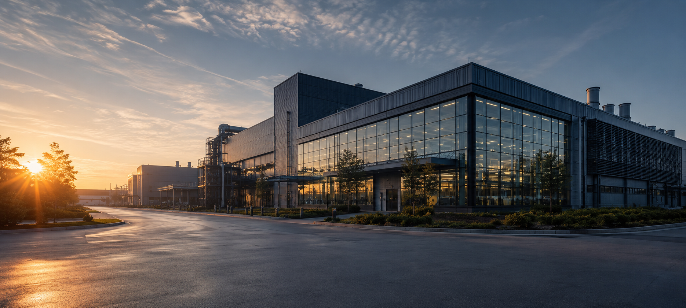
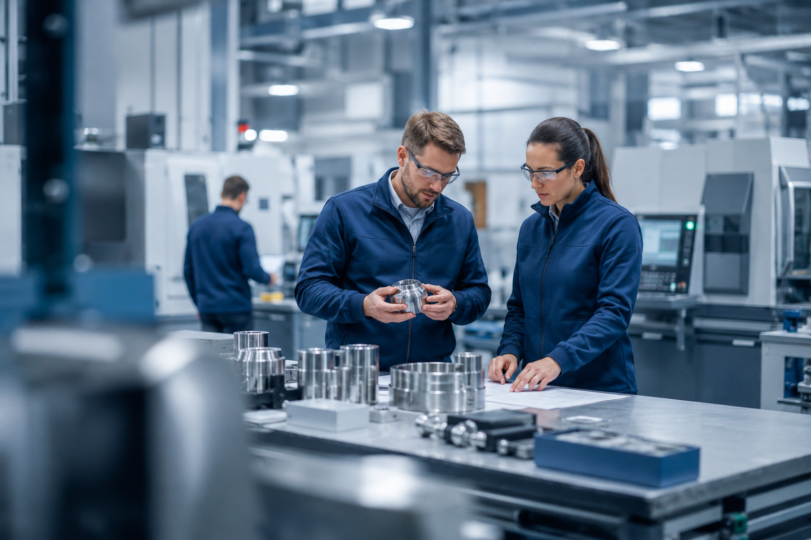

Yerinde üretim, teknik güven, zamanında teslimat
Sanayi projelerinde güvenilir üretim ve tedarik ortağı.
Atlas Endüstri; metal işleme, özel imalat, teknik parça üretimi ve proje bazlı endüstriyel tedarik alanlarında kurumsal firmalara çözüm üretir.
Operasyon Özeti
Yeni Projelere Açık
Lazer Kesim ve Büküm
Yeni sipariş kabul ediyor
Kaynaklı İmalat
Orta hacimli projeler uygun
Kalite Kontrol
Dokümante sevkiyat akışı
12+ Yıl
endüstriyel üretim ve proje tecrübesi
OEM Odaklı
teknik şartnameli işlere uygun teklif yaklaşımı
Kurumsal Yapı
satın alma ekipleri için güven veren sunum dili
SEO Güçlü
Türkçe ürün, üretim ve sektör odaklı bilgi mimarisi
Kurumsal
Kurumsal güveni, teknik açıklığı ve arama motoru görünürlüğünü birlikte kuran yapı.
Metal işleme ve endüstriyel üretim alanında teknik disiplinle ilerleyen çözüm ortağı.
Atlas Endüstri; proje bazlı üretim, teknik parça tedariki, fason üretim, makina komponentleri ve endüstriyel imalat süreçlerinde kurumsal müşterilere hizmet verecek şekilde kurgulandı.
Türkçe başlıklar, açık sektör isimleri ve üretim odaklı içeriklerle arama görünürlüğü güçlenir.
Geniş kitleye değil, satın alma müdürü ve teknik ekip gibi karar vericilere hitap eder.
Ürün Grupları
Aranan anahtar kelimeleri taşıyan, net ve taranabilir ürün yapısı.
Metal İşleme
Lazer kesim, büküm ve teknik sac parça üretimi
Seri üretime uygun, ölçü kontrollü ve termin odaklı üretim yaklaşımı.Özel İmalat
Projeye özel makina ve ekipman parçaları
Çizime dayalı, müşteri ihtiyacına göre esnek üretim ve tedarik yapısı.Kaynaklı İmalat
Şase, kabin, konstrüksiyon ve kaynaklı alt montaj
Saha koşullarına uygun sağlamlık ve sevkiyata hazır üretim disiplini.Endüstriyel Tedarik
Proje bazlı komponent ve teknik malzeme yönetimi
Teklif, temin ve teslimat sürecini tek kanalda toplayan çözüm yaklaşımı.Üretim Yetkinlikleri
Teknik satın alma sürecini hızlandıran bilgi blokları.
Teknik Tekliflendirme
Resim, malzeme, adet, tolerans ve termin bilgilerini hızlı değerlendiren teklif akışı.
İlk temasta doğru bilgi toplandığı için teklif süreci daha kısa ve daha ciddi ilerler.
Üretim Altyapısı
Lazer kesim, büküm, kaynak, montaj ve kalite kontrolü bir sistem yüzüyle anlatan yapı.
Modern endüstriyel sitelerde satın alma birimleri kapasiteyi bir bakışta anlamak ister.
Kalite ve Dokümantasyon
Ölçüm, izlenebilirlik ve sevkiyat öncesi doğrulama diliyle kurumsal güven oluşturan anlatım.
Bu katman özellikle büyük kurumsal ve ihracat odaklı müşteriler için fark yaratır.

Üretim Alanı
Gerçek üretim görüntüsü, güveni soyut tasarımdan daha hızlı kurar.
MKE ve benzeri güçlü kurumsal sitelerde dikkat çeken şeylerden biri; ürün, üretim ve haber akışını birlikte göstermeleri. Atlas bu nedenle gerçek operasyon hissi veren görüntü ve metin yapısına kaydırıldı.
Makina imalatı ve teknik parça üretimi
arama motorlarında daha net bulunabilirlik için açık başlıklar
Kurumsal duyuru ve haber mantığı
dinamik görünüm ve güven hissi için içerik sürekliliği sinyali
Tesis ve üretim hücresi vurgusu
büyük firma algısını güçlendiren yapısal katman
Duyurular ve Haberler
Canlı içerik hissi veren, SEO için değerli kurumsal akış.
Atlas Endüstri yeni üretim hücresi yatırımını devreye aldı
Metal işleme kapasitesini artıran yeni yatırım ile termin esnekliği güçlendirildi.
Teknik tedarik süreçlerinde dijital teklif akışı yayına alındı
Müşteri çizimleri ve teknik verileri daha hızlı toplamak için yeni RFQ yapısı oluşturuldu.
Makina komponentlerinde seri üretim takibi genişletildi
Takip, kalite kontrol ve sevkiyat görünürlüğü için süreç güncellendi.
Enerji ve otomasyon sektörleri için yeni proje kabul dönemi başladı
Özel imalat, panel, kabin ve kaynaklı üretim işlerinde yeni iş akışları açıldı.
“Türkçe endüstriyel sitelerde en güçlü yapı; ürün grupları, üretim yetenekleri, duyurular ve tesis bilgilerini tek bir kurumsal omurgada birleştiren yapıdır.”
Tesisler
Büyük ölçek hissi veren tesis ve işletme yapısı.
Metal İşleme Tesisi
Lazer kesim, büküm ve sac parça üretim kabiliyeti.
Kaynaklı İmalat Hattı
Kaynaklı alt montaj, şase ve teknik konstrüksiyon üretimi.
Montaj ve Sevkiyat Alanı
Son kontrol, paketleme ve teslimat öncesi operasyon yönetimi.
Proje ve Teklif Ofisi
Teknik brif, maliyetlendirme ve müşteri koordinasyonu için merkezi yapı.
İletişim ve Teklif
Kurumsal iletişim bloğu yerine gerçek teknik teklif yüzeyi.
SEO odaklı Türkçe kurumsal yapılarda iletişim bölümü sadece adres yazan bir footer alanı olmamalı. Teknik satın alma mantığına uygun giriş yüzeyi daha güçlü dönüşüm sağlar.
Teklif E-postası
teklif@atlasendustri.com
Telefon
+90 212 555 01 27
Adres
Tuzla Organize Sanayi Bölgesi, İstanbul